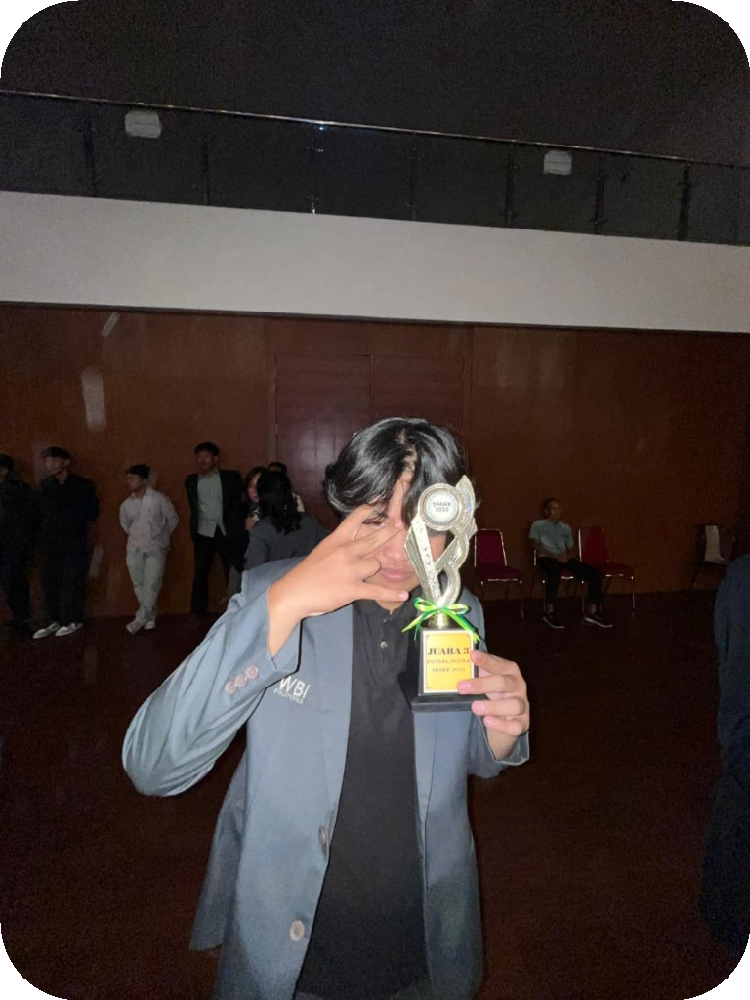

FULL NAME //
FIRMAS HABIBI
ROLE //
FULLSTACK ENGINEER
CORE STACK //
REACT - NODE.JS
LOCATION //
INDONESIA - SUMATERA UTARA
FOCUS //
HIGH-PERFORMANCE SYSTEMS
PORTFOLIO
frmshbi.dev
GITHUB
github.com/firmashabibii
INSTAGRAM
instagram.com/frmshbi
Mencari marker...
Arahkan kamera ke
Pattern Marker
Anda